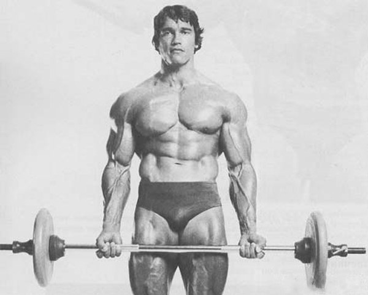
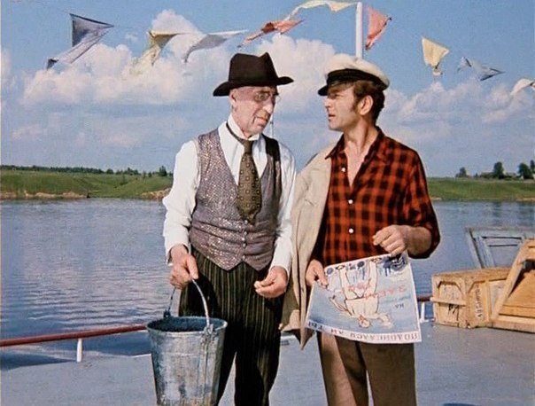

Практические советы по развитию разработчика
Практические советы по развитию
От
разработчика
— разработчику


К делу
Что самое ценное в вашей жизни?
Что вам нужно для счастья?
Как развиваться
Формализация целей.
Контроль времени. Планирование. Дисциплина.
Регулярность занятий.
Что помнить всегда
Лучшие вопросы: «почему?» и «зачем мне это?»
Глупые вопросы — незаданные.
Отсутствие полного понимания не мешает пользоваться.
Всегда есть «подводные камни».
Общая прокачка
Память, интеллект.
Умение коротко и правильно выражать мысли.
Аккуратность. Честность.
Обучение на ошибках.
Коммуникабельность.
Любопытство.
Критическое мышление.
Профильная прокачка (IT)
Быстрый набор.
Ненакопление технологического долга.
Слежение за отраслью.
Политика бекапов и паролей.
Шапочка из фольги.
Отсутствие погони за новыми технологиями.
Умение делать просто.
Консультации с профессионалами.
Профильная прокачка (вёрстка)
Умение «мыслить блоками».
HTML, CSS, БЭМ, JS, СКВ.
Забота о переполнении.
Общение с коллегами и смежниками.
Идеальное владение редактором кода и браузером.
Владение терминалом и автоматизация.
Накопление технологических решений.
Практика
Формулируем цели, ставим сроки (trello.com?).
Выясняем кол-во и распределение свободных часов в неделю.
Планируем время обучения/работы/отдыха (calendar.google.com?).
Отслеживаем и корректируем план.
Делай настолько просто,
насколько возможно.
Но не проще.
Делай настолько хорошо,
насколько позволяет бюджет.
Критерий истинности — практика.